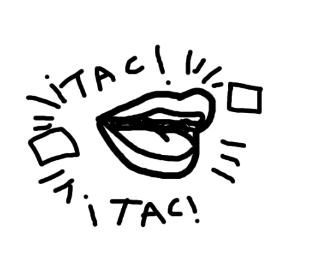
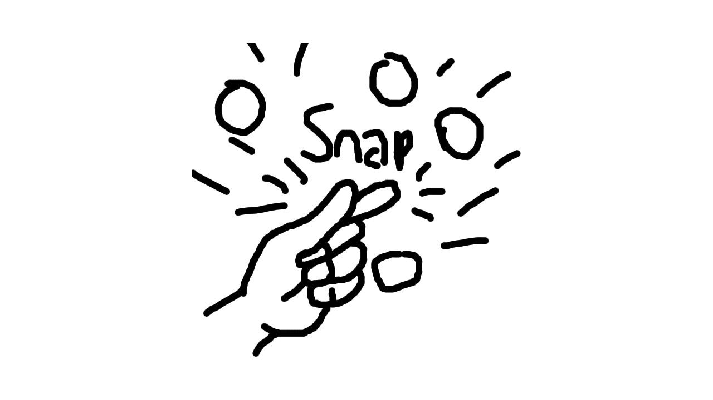
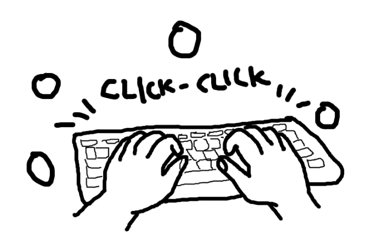
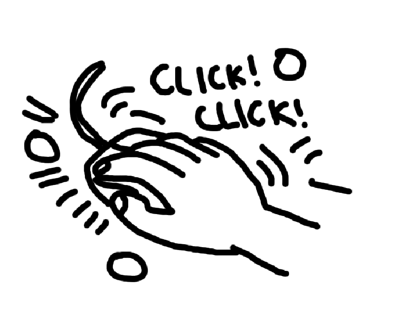
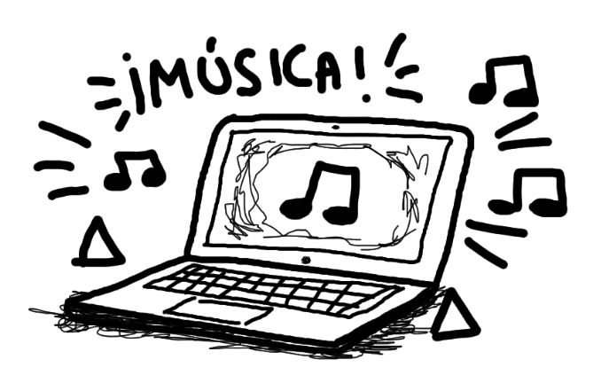

Una colección de sonidos que registran la vida en la ciudad, la universidad y experiencias personales, capturando momentos cotidianos, ambientes diversos y emociones que reflejan la interacción constante entre el entorno urbano y la vivencia individual.
Sonidos de Ciudad
Los sonidos urbanos que caracterizan mi entorno diario en la ciudad, construyendo una atmósfera constante donde el ruido del tráfico, las voces, los movimientos y las dinámicas del espacio público se entrelazan y definen la experiencia cotidiana.
Ciudad - Cedritos
Grabación del bullicio constante de la ciudad, donde el sonido del tráfico, las conversaciones, las máquinas y el movimiento incesante crean una capa sonora permanente, evidenciando la casi inexistencia de silencio y cómo el ruido se convierte en una presencia continua que acompaña cada momento del día y de la noche.
Sonidos de Universidad
Los sonidos característicos del ambiente universitario.
Universidad - El bosque
Sonidos de la universidad, donde se entrecruzan distintas conversaciones, risas, pasos y actividades cotidianas, creando un ambiente dinámico que refleja la vida académica, la interacción entre estudiantes y la constante circulación de ideas en los espacios compartidos.
Sonidos del Cuerpo
Sonidos íntimos del cuerpo humano.
El cuerpo


Sonidos que puede hacer el cuerpo, como respiraciones, latidos, movimientos, roces y pequeñas acciones cotidianas, que revelan una dimensión íntima y cercana del sonido, conectando lo físico con lo emocional en la experiencia personal.
Sonidos de Tecnología
Sonidos característicos de dispositivos tecnológicos cotidianos.
Tecnología



Sonidos de dispositivos tecnológicos, como los clics del mouse, el tecleo constante del teclado y la música que emerge desde una laptop, creando una atmósfera digital que acompaña las actividades diarias y evidencia la presencia permanente de la tecnología en la vida cotidiana.
Sección de videos
CLugar donde se podrán encontrar distintos videos que reúnen diversas experiencias, registros y perspectivas, permitiendo explorar contenidos audiovisuales que amplían la comprensión del proyecto y complementan la experiencia sonora.
Video 1 - Gestos
Registro visual de un gesto.
Gesto hecho por un ser humano que expresa algo, ya sea una emoción, una intención o una reacción, convirtiéndose en una forma de comunicación no verbal que transmite significado y conecta lo interno con lo externo.
Video 2 - Objeto
Hermosa planta que se encuentra en mi cocina.
Objeto que es una planta, cuya presencia orgánica aporta vida y textura al entorno, reflejando procesos naturales y generando una conexión visual y sensorial con la naturaleza dentro del espacio.
Video 3 - Escena
Otro país, otras edificaciones.
Escena en otro país, que captura un contexto diferente en términos culturales, sociales y visuales, permitiendo observar nuevas atmósferas y contrastes frente al entorno habitual.
Video 4 - Recorrido
Un pequeño recorrido por la universidad del bosque
Recorrido por la universidad, donde se atraviesan distintos espacios, pasillos y puntos de encuentro, mostrando la dinámica del entorno académico y las experiencias que se construyen a lo largo del trayecto.
Tabla de los sonidos
Resumen organizado de los sonidos y videos que se encuentran en la página.
Nombre del sonido
Lugar
Fecha
Duración aproximada
Sonidos de la ciudad 1
Cedritos - Usaquen
10/03/2026
18s
Sonidos de la ciudad 2
Cedritos - Usaquen
10/03/2026
18s
Sonidos de la ciudad 3
Cedritos - Usaquen
10/03/2026
13s
Sonidos de la universidad 1
Universidad del bosque
11/03/2026
21s
Sonidos de la universidad 2
Universidad del bosque
11/03/2026
11s
Sonidos de la universidad 3
Universidad del bosque
11/03/2026
15s
Sonidos del cuerpo - Aplausos
Cuerpo humano
17/03/2026
8s
Sonidos del cuerpo - Sonidos con la boca
Cuerpo humano
17/03/2026
3s
Sonidos del cuerpo - Chasquidos
Cuerpo humano
17/03/2026
5s
Sonidos tecnológicos - Teclado
Escritorio
17/03/2026
22s
Sonidos tecnológicos - Mouse
Escritorio
17/03/2026
7s
Sonidos tecnológicos - Música
Escritorio
17/03/2026
15s
Enviar Sugerencia
¡¿Tienes un sonido o video y quieres que lo agregue?! Envíamelo